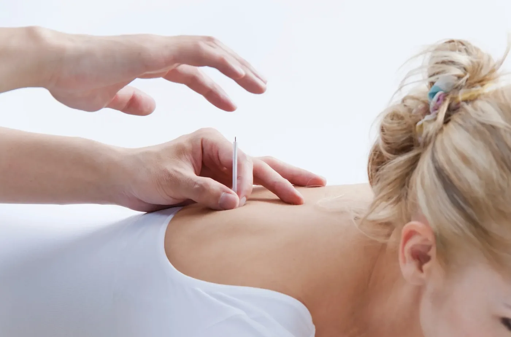

Electroacupuncture
Research-Based Treatment
Researchers from Indiana University School of Medicine produced a publication online March 16th, 2017 in the journal Stem Cells that provides the most comprehensive picture yet of how electroacupuncture stimulates the brain, allowing for the release of stem cells, and adds new insight to the cells' healing properties.
This study demonstrates how electroacupuncture results in the release of reparative mesenchymal stem cells into the blood stream. Combined with our other treatments like cupping therapy and consciousness therapy, we provide comprehensive holistic healing.
They found that stem cells were mobilized and released into the brain within 2 hours of treatment.
The effects of electroacupuncture are lasting and cumulative. Consistent treatment creates a better environment to allow the site of injury to heal.
Researchers also found electroacupuncture treatments resulted in higher pain tolerance thresholds for injury-induced pain as well as considerable increases in the presence of a type of collagen that promotes tendon repair and leads to faster healing time.
Electroacupuncture stimulates the brain to facilitate the release of stem cells and adds new insight relating to the cells' healing properties.
Electroacupuncture is a form of acupuncture that uses a small electrical current to augment the ancient Chinese medical practice of inserting fine needles into the skin at pre-determined points throughout the body.
For the study, a team of more than 40 scientists at institutions in the United States and South Korea was led by four senior authors including IU School of Medicine's Maria B. Grant, MD, Marilyn Glick Professor of Ophthalmology and co-corresponding author; Mervin C. Yoder, MD, IU Distinguished Professor, Richard and Pauline Klingler Professor of Pediatrics, associate dean for entrepreneurial research at IU School of Medicine, director of the Herman B Wells Center for Pediatric Research and co-corresponding author; and Fletcher A. White, PhD, Vergil K. Stoelting Chair of Anesthesia, professor of anesthesia, pharmacology and toxicology.
"This work is a classic example of the power of team science, where investigators in different institutions with specific expertise worked together to unravel the complexity of how electroacupuncture works to help the body respond to stressors," said Dr. Yoder.
The researchers performed a series of lab tests involving humans, horses and rodents that follow the effects of electroacupuncture from the stimulus of the needle all the way to the brain, resulting in the release of reparative mesenchymal stem cells (MSCs) into the bloodstream.
Depending on the species, electroacupuncture led to activation of the hypothalamus -- a part of the brain that controls the nervous system and involuntary bodily functions such as heart rate and digestion -- within nine to 22 minutes. The stem cells were mobilized within two hours.
"The acupuncture stimulus we're giving these animals has a rapid effect on the neuroanatomical pathways that connect the stimulus points in the arm to responsive neurons in the spinal cord and into a region in the brain called the hypothalamus. In turn, the hypothalamus directs outgoing signals to stem cell niches resulting in their release," said Dr. White, who is a neuroscientist at the Richard L. Roudebush VA Medical Center in Indianapolis.

Key Research Findings
Stem Cell Release
Electroacupuncture stimulates the release of reparative mesenchymal stem cells into the bloodstream within 2 hours of treatment.
Brain Activation
Activates the hypothalamus within 9-22 minutes, controlling nervous system and involuntary bodily functions.
Pain Tolerance
Results in higher pain tolerance thresholds for injury-induced pain and enhanced collagen production for tendon repair.
Cumulative Effects
The effects are lasting and cumulative, with consistent treatment creating a better healing environment.
Rapid Response
Rapid effect on neuroanatomical pathways connecting stimulus points to responsive neurons in the spinal cord and brain.
Healing Enhancement
Directs signals to stem cell niches resulting in their release, facilitating natural healing processes.
Experience Advanced Electroacupuncture Treatment
Discover the cutting-edge benefits of electroacupuncture with Dr. Yasmin Harounian L.Ac in Los Angeles. Experience stem cell activation, enhanced healing, and lasting pain relief through evidence-based treatment.
Schedule Your Treatment